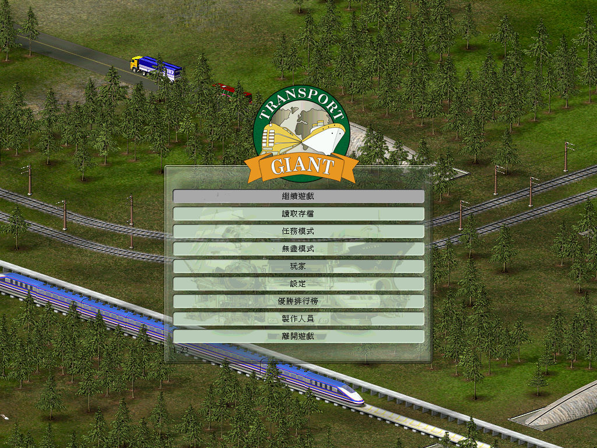
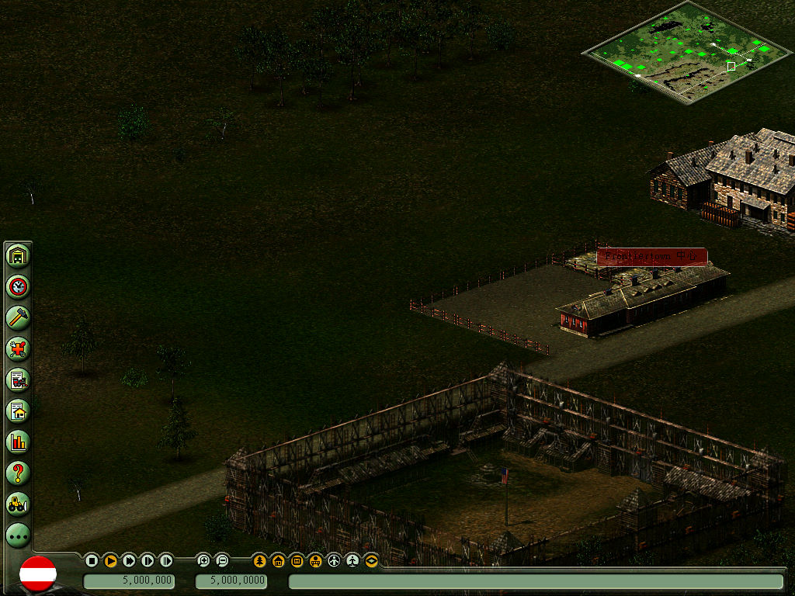

名稱：模擬運輸公司／運輸巨人 (Transport Giant，中文／英文版)
簡介：JoWooD 2004年出品的運輸經營模擬遊戲，由光譜中文化並代理發行。同年推出「澳洲
開拓史（Down Under）」資料片，2005年推出整併的「黃金版（Gold）」，2006年由
光譜重新中文化，以「新．模擬運輸公司」名義再次發行 [待補]。


保護：繁中版為光碟X-Prot 1.4.9.16，英文黃金版無保護。
備註：非安裝移機者，需設定下列Registry：
[HKEY_LOCAL_MACHINE\SOFTWARE\Jowood\TransportGiant]
[HKEY_LOCAL_MACHINE\SOFTWARE\WOW6432Node\Jowood\TransportGiant]
"InstallPath"=".\\"
備註：繁中版為1.23版，英文黃金版為2.10版。繁中版無法使用英文版免光碟檔。
備註：以下是各系統環境的執行狀況：
1.VirtualBox+XP+WineD3D：貼圖有些問題，滑鼠反應非常緩慢，相當於無法玩。
2.VMware+XP+WineD3D：英文版完全正常，繁中版文字顯示錯亂。
3.Win64+dgVoodoo2：貼圖有些問題，其餘正常，不介意貼圖問題的話，繁中版算是可玩。
4.86Box+Win98：英文版完全正常，繁中版因保護關係程式無法執行。